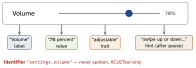
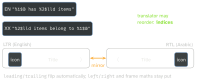

ios-platform · folio
In one line: Accessibility: VoiceOver walks a tree of elements and speaks each one’s label, value, traits, hint; text must scale with Dynamic Type; honour user settings (Reduce Motion, contrast). Localization: every user-visible string is a whole sentence in a String Catalog, arguments are positional, plurals follow CLDR rules, layout is leading/trailing, and numbers/dates go through formatters.
Download PDF Print view LaTeX source

Accessibility
- Label = what it is (“Volume” — never “Volume button”, the trait says button). Value = current state (“70%”). Traits = role/state (
.button .header .selected .adjustable .notEnabled). Hint = result of acting, spoken last, after a pause; users can turn hints off. isAccessibilityElement = truemakes a view a leaf; on a container it hides the children. Order children withaccessibilityElements = [...]. Decorative:.accessibilityHidden(true).- Grouping (SwiftUI)
.accessibilityElement(children:):.combine(one swipe, merged) ·.ignore(you label it) ·.contain(keep children, group them). .adjustableneedsaccessibilityIncrement()/Decrement()(SwiftUI.accessibilityAdjustableAction).- Custom actions (
UIAccessibilityCustomAction,.accessibilityAction(named:)) expose swipe/long-press actions via the Actions rotor; custom rotors (.accessibilityRotor) jump between headings/links. Announce:UIAccessibility.post(notification: .announcement, …). accessibilityIdentifieris for UI tests: stable, not localized, never spoken.- Dynamic Type:
UIFont.preferredFont(forTextStyle:)orUIFontMetrics(forTextStyle:).scaledFont(for:), plusadjustsFontForContentSizeCategory = true(defaultfalse) andnumberOfLines = 0. SwiftUI text styles scale by themselves; custom sizes:@ScaledMetric. At the accessibility sizes, stack vertically. - Settings: Reduce Motion (
\.accessibilityReduceMotion: swap zooms for fades), Reduce Transparency, Increase Contrast, Bold Text. Never colour alone. - Audit: Accessibility Inspector ·
XCUIApplication().performAccessibilityAudit()(Xcode 15).
Localization
- String Catalog
.xcstrings(Xcode 15, JSON): keys extracted at build, per-language state, plural + device variants inline. Replaces.strings+.stringsdict. - Code:
String(localized: "key", defaultValue:, comment:)(iOS 15),LocalizedStringResource; SwiftUIText("literal")is aLocalizedStringKey. Packages:bundle: .module. Always acomment:. - Plurals: “Vary by plural” — the language’s CLDR categories (table). Never
count == 1 ? :. - RTL:
leading/trailing+.naturalalignment mirror;left/rightnever do. Opt out per view withsemanticContentAttribute(.playbackfor media controls); SwiftUI\.layoutDirection. - Formatters:
date.formatted(…),.currency(code:),Measurement(km↔mi). Formats followLocale.current(region settings); the UI language isBundle.main.preferredLocalizations. - Test: pseudolanguages (Accented, Bounded, Double-Length, Right-to-Left); vendors get Export Localizations (
.xcloc= XLIFF + context).
A volume row, done right
HStack { // a volume row
Image(systemName: "speaker.wave.2").accessibilityHidden(true)
Text("Volume") // LocalizedStringKey
Slider(value: $level)
}
.accessibilityElement(children: .ignore)
.accessibilityLabel("Volume") // no "slider" - trait adds it
.accessibilityValue(Text(level, format: .percent))
.accessibilityAdjustableAction { // swipe up / down
level += $0 == .increment ? 0.1 : -0.1 }
.accessibilityIdentifier("settings.volume") // tests only
// catalog key "%lld files deleted", varied by plural
let msg = String(localized: "\(count) files deleted",
comment: "Toast after bulk delete")What VoiceOver says

Positional arguments & mirroring

Numbers
| Contrast (WCAG AA) | text ≤ 17 pt | 4.5:1 |
| ≥ 18 pt, or bold | 3:1 | |
| [2pt] Hit target default / min | iOS, iPadOS, watchOS | 44 / 28 pt |
| visionOS | 60 / 28 pt | |
| macOS · tvOS | 28 / 20 · 66 / 56 pt |
[4pt]
| CLDR plurals | |
| ja | other |
| en | one other |
| pl · ru | one few many other |
| ar | zero one two few many other |
Traps
- “Play button” as label → “Play button, button”.
isAccessibilityElementon a container hides its children.preferredFontwithout theadjustsFont…flag → never re-scales.- UI tests matching localized labels — use
accessibilityIdentifier. "\(n) " + "items"— breaks word order and plurals.Text(aStringVar)is not localized — only literals / keys.
Remember
“L-V-T-H” — Label, Value, Trait, Hint (the order VoiceOver speaks). Localize sentences, not words; lead, don’t left.